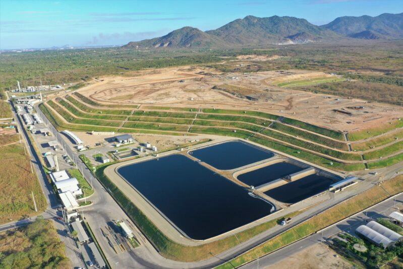

O rio invisível do Amazonas: curso subterrâneo intriga cientistas a 4 mil metros de profundidade
A mais de dois mil metros da superfície do maior corpo d’água em extensão do mundo corre um rio 'invisível'
 Foto de arquivo de...
Foto de arquivo de...
O rio Amazonas, o maior corpo d’água em extensão do mundo (descontando-se antigas contradições científicas), esconde mais segredos do que se pode pensar. Um deles é a existência de um outro rio que corre nas suas profundezas: o rio Hamza, descoberto em 2010, é um corpo d’água subterrâneo que passa pelos estados do Amazonas, Amapá e Pará, e vai desaguar do Atlântico.
O Hamza corre cerca de quatro mil metros “abaixo” da superfície do rio Amazonas. A bem da verdade, ele não é exatamente um rio, mas um aquífero: uma formação geológica subterrânea que armazena e transmite água, em camadas porosas e permeáveis, e não através de um canal definido.
Sua descoberta, conta o Portal Amazônia, foi viabilizada pela pesquisa que constituiu o projeto de doutorado de Elizabeth Pimentel, da Universidade Federal do Amazonas (Ufam), que investigava, junto ao geofísico e hidrogeólogo Valiya Mannathal Hamza (cujo sobrenome foi dado ao corpo d’água em sua homenagem), o fluxo geotérmico na região de poços de petróleo perfurados pela Petrobras ainda na década de 1970.
 27/05/25
Autoridades do Acre repudiam ataques contra ministra Marina Silva em comissão no Senado
27/05/25
Autoridades do Acre repudiam ataques contra ministra Marina Silva em comissão no Senado
Em nota, autoridades destacam que Marina Silva foi interrompida, desrespeitada e alvo de insinuações ofensivas.
 29/05/25 Manaus rumo aos combustíveis sustentáveis: Novo aterro impulsiona potencial da AmazôniaNovo aterro em Manaus busca inserir a Amazônia na rota dos combustíveis sustentáveis.
 27/05/25
Governo de RO atualiza plano de carreira da Sedam para valorizar servidores
27/05/25
Governo de RO atualiza plano de carreira da Sedam para valorizar servidores
A lei moderniza o Plano de Carreira, Cargos e Remuneração (PCCR) dos servidores da Sedam, valorizando o fortalecimento e atuação na área ambiental.